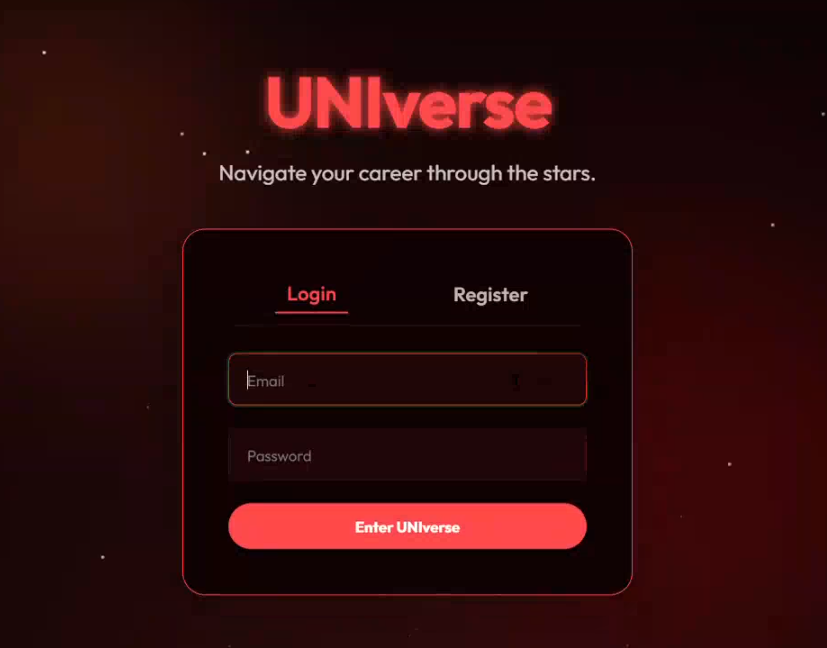
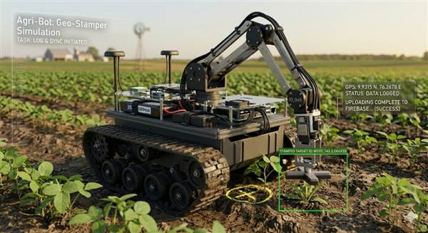
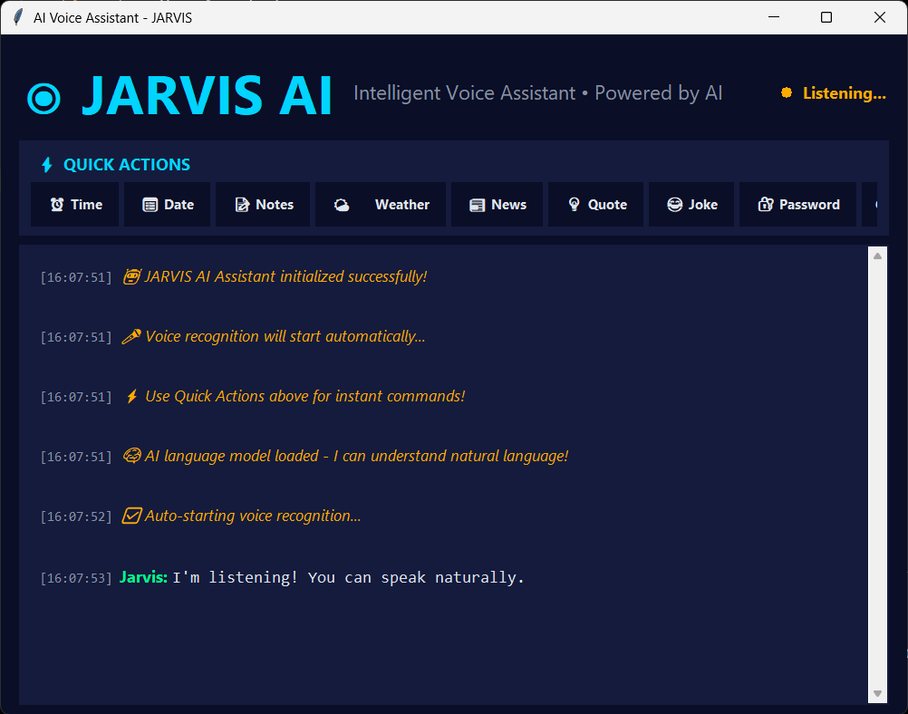

About
I'm a second-year Electronics and Communication Engineering student at Model Engineering College, Thrikkakara. I'm deeply passionate about both hardware and software — I love the thrill of seeing a circuit come to life just as much as shipping a clean piece of code.
My interests span across machine learning, cloud computing & DevOps, and embedded systems. I enjoy working on projects that sit at the intersection of electronics and intelligent software — whether it's training a model, designing a PCB, or automating a deployment pipeline.
When I'm not studying or coding, you'll find me soldering components, tinkering with microcontrollers, or exploring the latest in cloud-native technologies. I believe in learning by building, and every project I take on is an opportunity to push my understanding a little further.
Currently
Building proficiency in GCP services, cloud architecture patterns, and preparing for certifications.
Learning KiCad and designing custom PCBs for embedded projects — from schematic to fabrication.
Exploring deep learning fundamentals, building models with PyTorch, and working on real-world datasets.
Exploring network security, ethical hacking fundamentals, and understanding system vulnerabilities.
Projects
-

UNIverse
UNIverse is a comprehensive learning platform designed to help students and professionals navigate their career paths through AI-curated roadmaps, automated assessments, and social learning features.
-

Agri-Bot (Geo-Stamper)
A tracked robotic rover developed for precision agriculture. The rover utilizes a dual-stage vision system to detect weeds and diseases, executes physical stamping on targets using a 4-DOF robotic arm, and logs geo-tagged event data to a cloud database.
-

JARVIS AI Assistant
JARVIS is a Python-based desktop voice assistant application. It provides natural language command classification, local desktop automation, location-based services, and camera-based facial emotion detection within a dark-themed Tkinter user interface.
Credentials